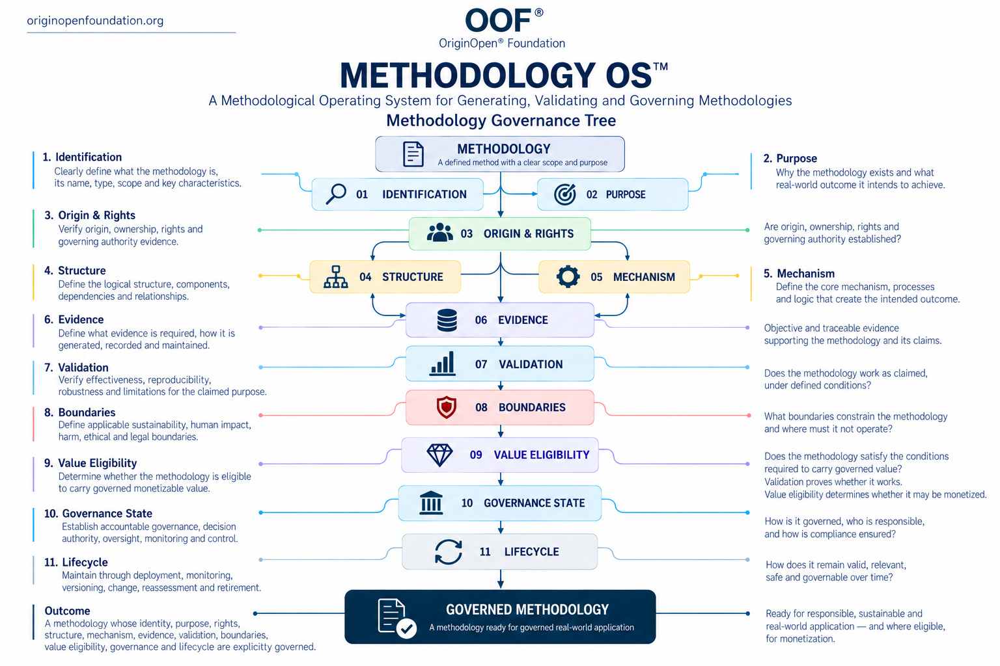

Methodology OS™
A Methodological Operating System for Generating, Validating and Governing Methodologies

About Methodology OS™
What Is Methodology OS™?
Methodology OS™ is a methodological operating system for generating, validating, governing and maintaining methodologies across their lifecycle.
It provides a common governance structure through which a methodology can be defined, structured, evidenced, validated, bounded, assessed for value eligibility, governed and maintained over time.
Methodology OS™ is designed to be methodology-independent. It does not prescribe what a particular methodology must conclude or which domain it must serve. Instead, it establishes the governance conditions through which methodologies can be systematically created and maintained.
Why Does Methodology OS™ Exist?
Methodologies are often created within isolated disciplines, organizations or technical environments. Their structures, evidence requirements, validation approaches, governance responsibilities and lifecycle controls may differ substantially.
Methodology OS™ establishes a common methodological infrastructure across these differences.
Its purpose is to make the methodology itself governable — not merely the activity performed through it.
This allows fundamental questions to be addressed systematically:
What is the methodology?
Why does it exist?
Who holds the relevant rights and authority?
How is it structured?
What mechanism produces its intended outcome?
What evidence supports it?
Has it been validated?
Within what boundaries may it operate?
Is it eligible to carry governed value?
Who governs it?
How does it remain valid over time?
What Methodology OS™ Is Not
Methodology OS™ is not a methodology for one particular industry, technology or scientific discipline.
It is not an AI methodology.
It is not a validation certificate.
It is not a guarantee that a methodology is effective, ethical or commercially valuable.
It is not a mechanism that automatically authorizes monetization.
Instead, it provides the governance structure through which these questions can be examined, evidenced and determined.
The Methodology Governance Tree
The Methodology Governance Tree represents the core operational structure of Methodology OS™:
Methodology
→ Identification + Purpose
→ Origin & Rights
→ Structure + Mechanism
→ Evidence
→ Validation
→ Boundaries
→ Value Eligibility
→ Governance State
→ Lifecycle
→ Governed Methodology
Each layer addresses a distinct methodological requirement while contributing to the governance state of the methodology as a whole.
The tree is not intended to imply that methodology development is always strictly linear. Evidence, validation, boundaries and lifecycle changes may require earlier elements to be reconsidered and revalidated.
From Methodology to Governed Methodology
A methodology becomes governable when its essential characteristics are no longer implicit.
Its identity is defined.
Its purpose is explicit.
Its rights and authority can be established.
Its structure and operating mechanism can be understood.
Its claims can be connected to evidence.
Its effectiveness can be tested.
Its operating boundaries can be defined.
Its value eligibility can be determined.
Its governance responsibilities can be assigned.
Its evolution can be controlled throughout its lifecycle.
The resulting state is a Governed Methodology.
Validation and Value Eligibility
Methodology OS™ deliberately separates technical or methodological validity from value eligibility.
Validation determines whether a methodology works as claimed under defined conditions.
Value Eligibility determines whether the methodology satisfies the conditions required to carry governed value.
These are not equivalent determinations.
A methodology may be technically effective while failing applicable sustainability, human-impact, harm, ethical, legal or other fundamental boundaries.
Accordingly:
Technical Effectiveness ≠ Value Eligibility
And market demand alone does not establish legitimate value.
Something does not become valuable merely because someone is willing to pay for it.
Where value eligibility is not established, downstream monetization should not be treated as an automatic consequence of technical effectiveness.
Governance Across the Lifecycle
Governance does not begin after a methodology has been created.
Methodology OS™ treats governance as a continuing requirement extending across methodology creation, validation, deployment, monitoring, versioning, modification, reassessment and retirement.
Changes to assumptions, evidence, mechanisms, operating environments or boundaries may therefore require renewed assessment.
A methodology that was previously valid or value-eligible does not necessarily retain that state indefinitely.
Governed status must remain supportable by evidence.
Designed for Human and Machine Use
Methodology OS™ is intended to support methodologies created and governed by humans, organizations, intelligent systems or combinations of them.
Its structure can therefore support both human-readable methodological documentation and future machine-readable implementation.
In an AI-supported environment, the system can provide a structured basis for identifying missing methodological elements, requesting evidence, testing defined requirements, maintaining traceability and supporting governed methodology generation.
AI does not replace methodology governance.
It operates within it.
Cross-Domain Application
Because Methodology OS™ governs the methodology rather than a specific subject matter, its core structure can be applied across different domains.
A scientific methodology, operational methodology, engineering methodology, financial methodology, AI methodology or future methodology may have radically different mechanisms and evidence requirements while still requiring identification, purpose, structure, evidence, validation, boundaries, governance and lifecycle control.
Domain-specific requirements can therefore develop without changing the foundational Methodology OS™ structure.
Principal Governance Output
The principal output of Methodology OS™ is:
Governed Methodology
A Governed Methodology is a methodology whose identity, purpose, rights, structure, mechanism, evidence, validity, boundaries, value eligibility, governance and lifecycle are explicitly governed.
Governed status does not itself guarantee monetization.
Where applicable, monetization remains dependent upon the methodology's established value eligibility and the relevant downstream value-governance mechanisms.
Canonical Boundary
Methodology OS™ governs how methodologies are generated, evidenced, validated, bounded, governed and maintained.
It does not replace the domain-specific systems that determine particular legal, technical, safety, ethical, economic or operational requirements.
Those systems may provide evidence or governance states to Methodology OS™ while retaining authority over their respective governed domains.
Canonical Closing Statement
A methodology should not become trusted because it exists.
It should become trusted because its purpose, mechanism, evidence, boundaries and governance can be demonstrated.
Methodology OS™ provides the infrastructure for that demonstration.